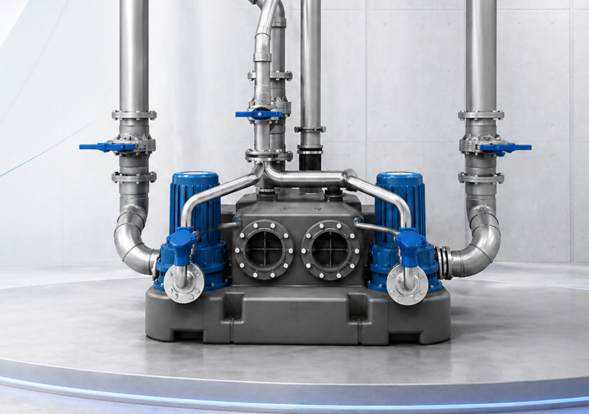
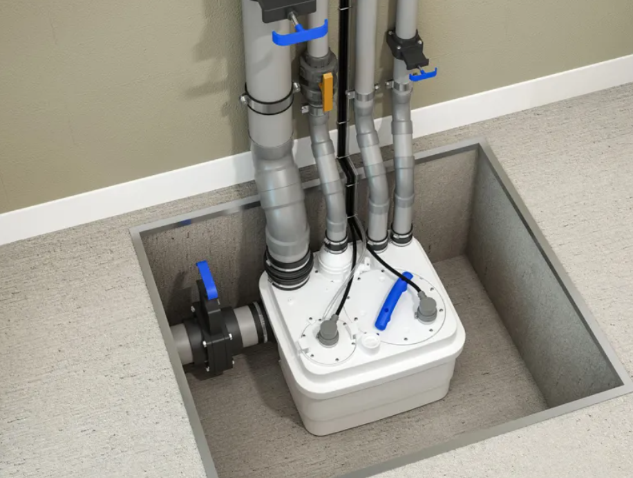
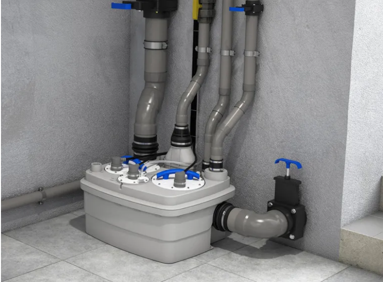
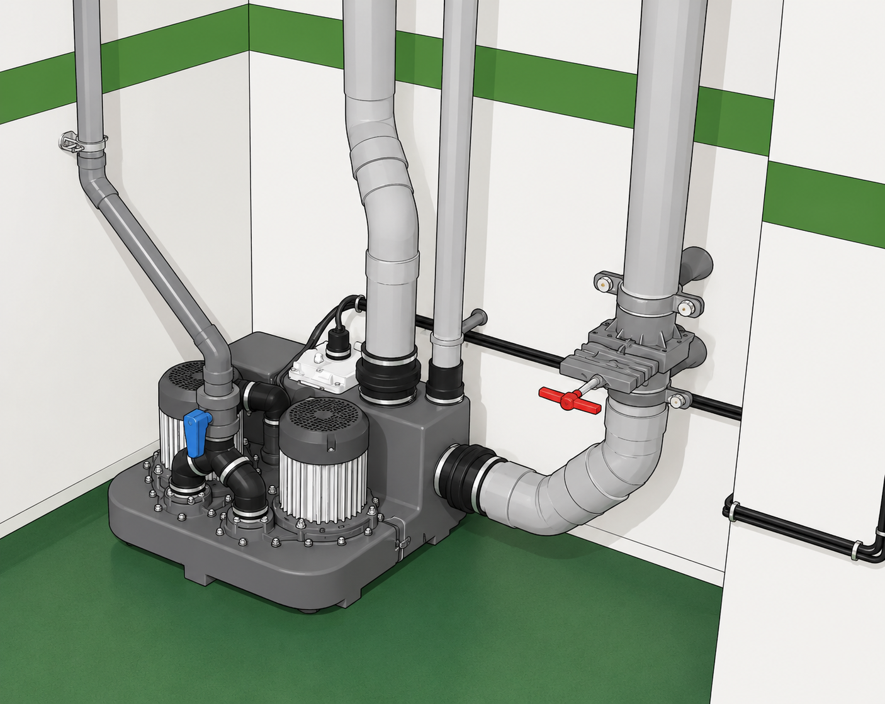
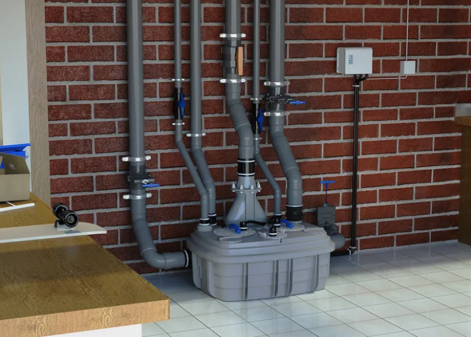
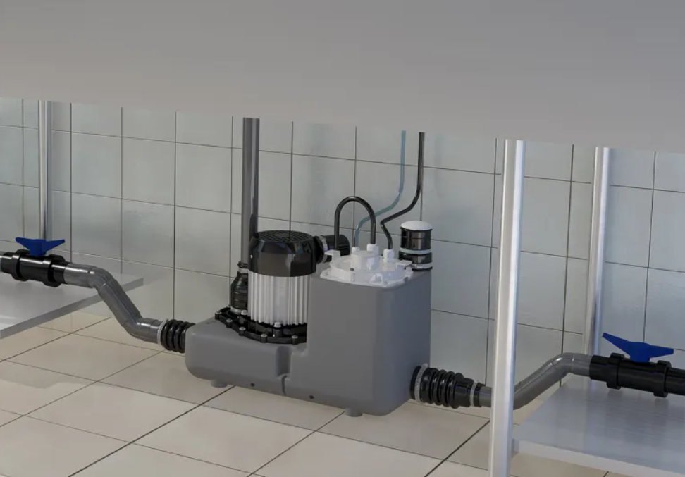
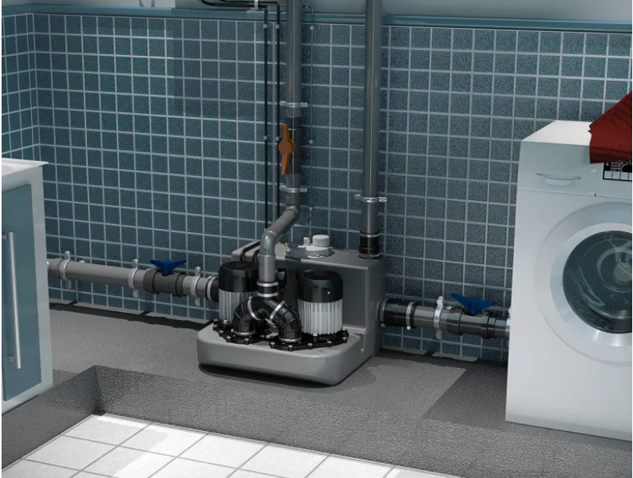
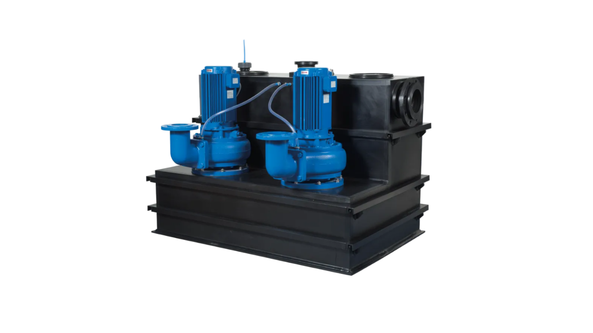

📞 032.347.0815~7
한국그런포스펌프(주) 프리미엄 공식 대리점 | 1995년 설립
✉ hyoilpump@daum.net
자립형 리프팅 스테이션은 실내 바닥에 설치되어 생활하수와 오수를 효율적으로 배수하는 솔루션입니다. 주거시설부터 상업시설까지 다양한 환경에 적용 가능하며, 설치 환경과 용도에 맞는 다양한 모델을 제공합니다.








SFA는 생활 오수·배수 처리 솔루션과 리프팅 스테이션 분야를 전문으로 하는 글로벌 펌프 제조 기업입니다.
SFA 공식 사이트 바로가기 →